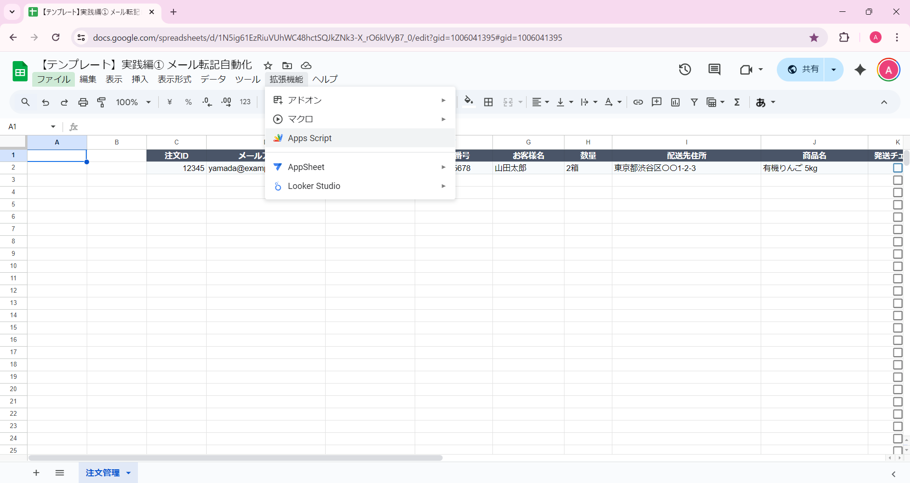
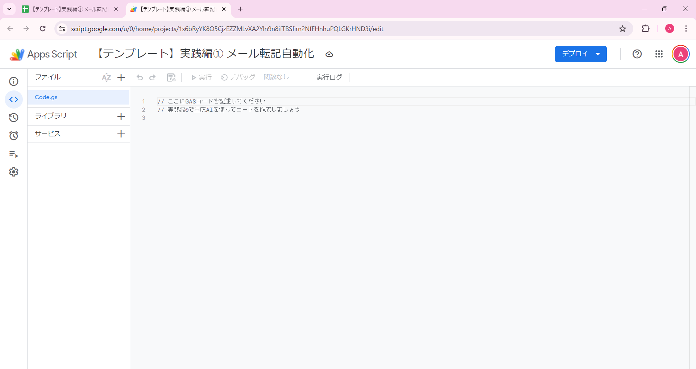

コードのコピー・貼り付け・保存
ChatGPTが生成したコードをGASエディタにコピーして、保存しましょう
ChatGPTがGASコードを生成してくれたら、次はそのコードをGoogleのスクリプトエディタにコピーして保存します。 スクリプトエディタは、GASのコードを書いて実行するための専用環境です。
このステップでは、スクリプトエディタを開いてから、ChatGPTで生成したコードをコピーし、エディタに貼り付け、保存するまでの一連の流れを見ていきましょう。 初めての方でも迷わないように、動画とテキストで丁寧に説明していきます。
コードのコピー・貼り付け・保存の手順
スプレッドシートテンプレートはこちら
実践編①で作成したスプレッドシートを使います。
まだ作成していない方は、こちらのテンプレートをコピーしてください。
「ファイル」→「コピーを作成」でご自身のGoogleドライブに保存できます。
※ コピーしたスプレッドシートから「拡張機能」→「Apps Script」を開いてください
Googleスプレッドシートを開く
実践編①で作成したGoogleスプレッドシートを開きましょう。 このスプレッドシートには、すでにGmailからの注文情報が転記されています。
今回は、このスプレッドシートに新しい機能（CSVファイルからの発送先情報取り込み）を追加していきます。 シート名は「受注一覧」のままで大丈夫です。
メニューから「拡張機能」→「Apps Script」をクリック
スプレッドシートの上部メニューバーから、「拡張機能」をクリックし、 ドロップダウンメニューから「Apps Script」を選択します。
💡 ポイント
メニュー項目が見つからない場合は、スプレッドシートの画面幅を広げてみてください。 画面が狭いと、一部のメニューが「︙」（縦三点リーダー）の中に隠れていることがあります。

※ スクリーンショットは実践編①のものですが、操作方法は同じです
スクリプトエディタが開く
実践編①で作成したGASプロジェクトが開きます。 Code.gsファイルには、実践編①で作成したメール転記のコードが表示されています：
function transferEmailsToSheet() {
// Gmailからメールを取得して転記する処理
...
}
このコードはそのまま残しておき、次のステップで新しい.gsファイルを追加していきます。
💡 スクリプトエディタについて
スクリプトエディタは、GASのコードを書くための専用環境です。 ここでプログラムを作成し、実行することができます。 Web上で動作するため、特別なソフトウェアをインストールする必要はありません。

※ スクリーンショットは実践編①のものですが、操作方法は同じです
新しい.gsファイルを追加する
実践編①で作成したCode.gsはそのまま残し、新しい機能用の.gsファイルを追加します。 これにより、機能ごとにファイルを分けて管理できるようになります。
💡 .gsファイルを分ける利点
- 機能ごとにコードを整理できる
- コードの見通しが良くなる
- 複数の自動化ツールを1つのスプレッドシートで管理できる
新しいファイルの追加手順
- スクリプトエディタの左側、ファイルリストの上部にある「＋」ボタンをクリック
- メニューから「スクリプト」を選択
- ファイル名を入力（例：
CSVImport） - Enterキーを押して確定
✅ 確認
新しいファイル（CSVImport.gs）が左側のファイルリストに追加され、 エディタ画面には空のコードエリアが表示されます。 Code.gsは残ったままになっています。

ステップ4-6: コードのコピー・貼り付け・保存
ChatGPTが生成したコードをGASエディタにコピーして保存する一連の流れを、まず動画で確認しましょう。
📹 操作の流れ（動画）
💡 動画を見ながら、実際の操作の流れを確認しましょう。
ChatGPTが生成したコードをすべて選択してコピー
ChatGPTの画面に戻って、生成されたコードをすべて選択してコピーします。
⚠️ 注意
コードをコピーする際は、コードブロック全体を選択してください。 ChatGPTの画面では、コードブロックの右上に「コピー」ボタンが表示されていることが多いので、 それをクリックすると簡単にコピーできます。
エディタに貼り付け
新しく追加したCSVImport.gsファイルに、コピーしたコードを貼り付けます。
重要：Code.gsファイル（実践編①のコード）はそのまま残しておいてください。 新しく追加したCSVImport.gsファイルの方に貼り付けます。
💡 ショートカットキー
コードの貼り付けは、以下のショートカットキーで行えます：
- Windows: Ctrl + V
- Mac: Cmd + V
「保存」ボタンをクリック
コードを貼り付けたら、必ず「保存」してください。 スクリプトエディタの上部にある「💾 保存」ボタンをクリックするか、 ショートカットキーで保存できます。
💡 ショートカットキー
保存のショートカットキー：
- Windows: Ctrl + S
- Mac: Cmd + S
✅ 保存完了の確認
保存が完了すると、画面上部に「保存しました」というメッセージが表示されます。 また、ファイル名の横に「*（アスタリスク）」が付いている場合は、まだ保存されていない状態です。
プロジェクト名を変更する（オプション）
実践編①で既にプロジェクト名（例：「注文メール自動転記システム」）をつけているため、 この手順はスキップして構いません。
もし、より包括的な名前に変更したい場合は、左上のプロジェクト名をクリックして、 「注文管理システム」や「受注データ統合ツール」などに変更することもできます。
💡 プロジェクト名の変更方法
- スクリプトエディタの画面左上に表示されている「無題のプロジェクト」をクリック
- 新しい名前を入力します（例：「CSVインポートツール」）
- Enterキーを押すか、入力欄の外をクリックして確定
✅ おすすめのプロジェクト名
- CSVインポートツール
- ドライブファイル取り込み
- 注文データ自動転記
- 売上データ管理ツール
プロジェクトの目的がひと目でわかる名前をつけると、後から見返した時に便利です。
コードの貼り付けができましたか？
コードを貼り付けて保存できたら、次は初回承認の手順を進めましょう。 GASを初めて実行する際は、Googleアカウントへの承認が必要です。
次へ：ステップ4 動作確認 →